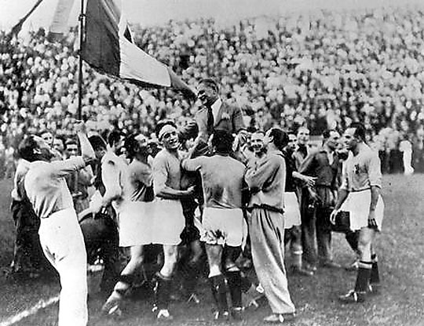
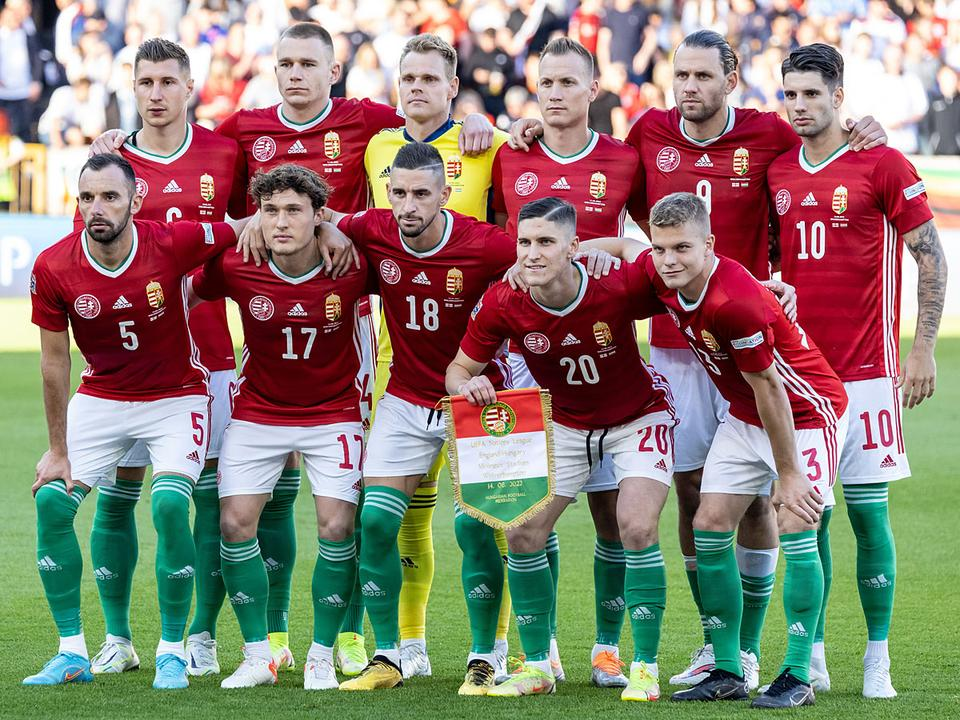
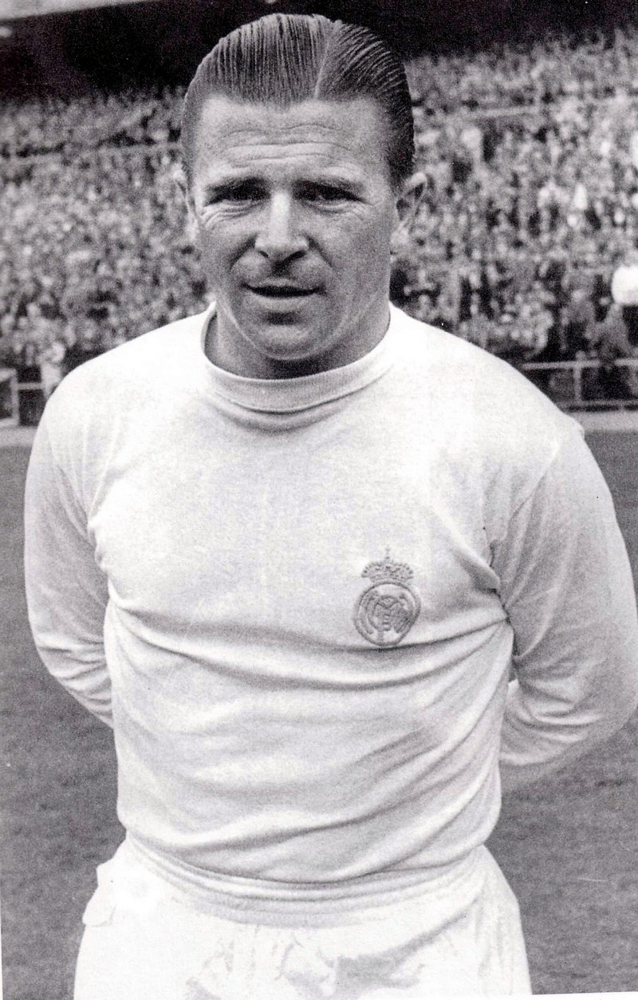

A labdarúgás (angol eredetű szóval football, az Amerikai Egyesült Államokban soccer, magyaros átírásban futball, a köznyelvben gyakran foci) labdajáték, amelyet a pályán két, egyenként 11 labdarúgóból álló csapat játszik egymás ellen. A játék célja, hogy a rendelkezésre álló idő alatt a labdát az ellenfél kapujába juttassák, lehetőleg minél többször, és így minél több gólt szerezzenek. A Nemzetközi Futballszövetségi Testület (International Football Association Board IFAB), a játék szabályalkotó szervezete. 1886-ban ez a szervezet fektette le a futball szabályait.
Az első labdarugó világbajnokság:
A Magyar válogatott szereplése:
Puskás Ferenc:
Készítette:Márki Kristóf és Vas Nimród